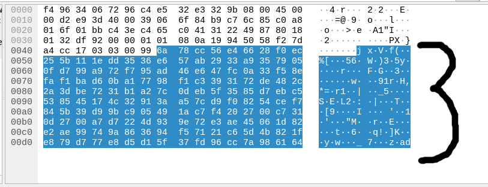
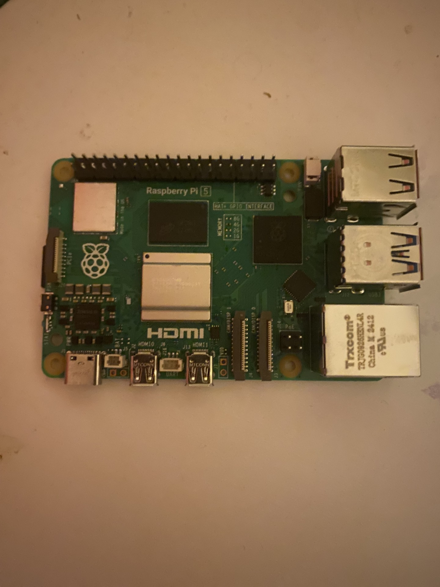
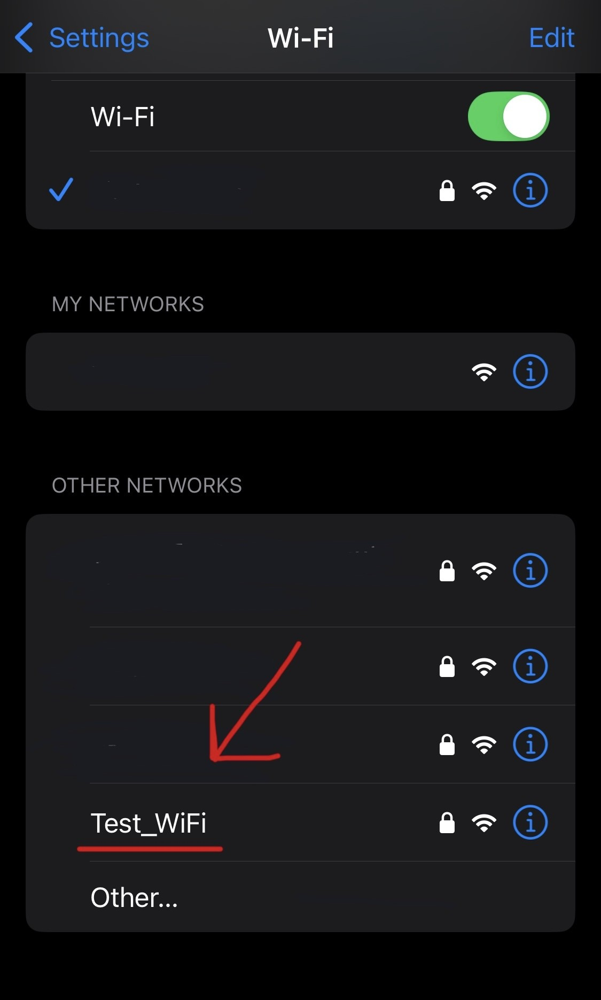
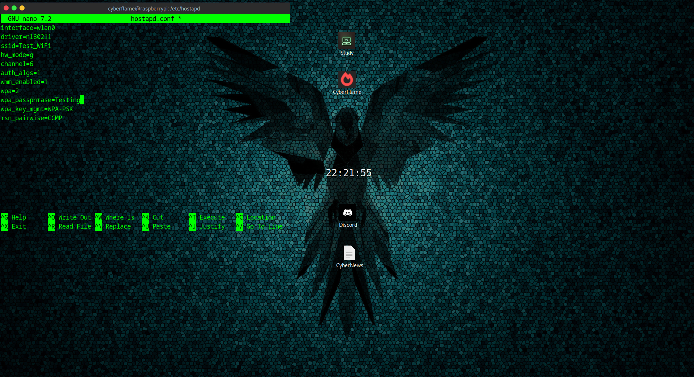

In this lesson we're going to look at some of the potential dangers of using public networks.
We'll take a walk through the workings and dangers of http in this particular setting, then we'll look at some common techniques such as 'Man in the middle' attacks. Stay till the end to see my Raspberry Pi do some nifty things.
Buckle up...
When you load a webpage - your browser communicates with the server in which the site is hosted on (or one of many servers) - in order to request things or receive responses to things.
To understand this fully we'll use an analogy.
Imagine you're sending a letter to your friend
Dear John,
Hope you're well. Could you send me Bob's
address so I can send his birthday present?
You post your letter, your friend receives it and reads it - happy days.
Now the only reason this works is because you both have an established format beforehand
This would be a much more complicated process if you sent this to your friend in morse code played on the bagpipes. The same information is there, you just have to figure out how to interpret it. Imagine the look on their face.
The same applies when asking a web server for a web page, the server has to understand what your browser is asking for and vice versa. It expects the information to be packaged in a certain way or it won't be able to fully understand it. This is an example of an application layer protocol.
HTTP is a universally accepted format in which communication is sent back and forth over the internet when browsing sites - in the same way that your friend john expects you to communicate with him in a letter rather than a carrier pigeon.
HTTP comes in two main flavours. HTTP and HTTPS. The first stands for "HyperText Transfer Protocol". The latter has an 'S' on the end - this stands for 'Secure'
Let's go back to our analogy. John replies:
Hey!
Of course, my address is 123 CyberFlame Lane.
Now imagine if someone were to pinch that letter from the postman's van. They would be able to see Bob's address in clear text right infront of them!
Unfortunately, this did happen. A man with unusually slender arms reached into the postbox and stole John's letter!
So what now?
You need Bob's address however you don't want to risk leaking sensitive information again?
You and John decide - let's create a code that only we can understand, then if someone steals it they won't be able to read it!
This is called Encryption
HTTPS works in the same way as we've just seen with John's encrypted letter. If anyone were to intercept it, they'd have a very hard time decrypting it (although is possible with certain techniques)!
This comes in handy when using public networks... Because it's public, anyone could connect and look at the traffic moving in and out of the network.
If you're communicating with a site that expects HTTPS communication, most of the data is next to impossible to interpret without having the key to decrypt it.
I'll load up a tool called "Wireshark" and show you exactly what this looks like:
If you look at the right side of the screenshot, the data Highlighted in blue is completely unlegible.
Now... If you were to use HTTP without the encryption, you'd be able to see far more data in good ole' plain english. If you look at the URL of this webpage, you'll see you're using the HTTP protocol - this isn't an issue, as you're likely viewing this on a private network. If you are reading this on a coffee shop wifi for example, not to worry - you're not sending or receiving anything sensitive and if someone did intercept your packets to this website they'd get to read this wonderful article too!
The action of watching these packets travelling in and out of the network is called packet sniffing.
Man In The Middle Attacks or 'MITM' is slightly more sophisticated.
Malicious actors use techniques to not only 'sniff' the packets, but capture them before they reach their destination.
By doing this, they could potentially modify the contents of what you're sending, redirect your requests to a malicious website or even downgrade your https communication to http.
The attacker can do this with the following communication:
Attacker:"Hey Mr victim, just letting you know that I'm the router, send your requests to me and I'll forward them for you!"
Then
Attacker:"Hey Mr Router, I'm the guy sending out packets to that website, send any responses to me!"
See, devices will have a table that stores the addresses of other devices on their network. By doing what the attacker has done, you set yourself up quite literally as a "Man in the middle".
Take a look at this itty bitty machine
What you're looking at is a Raspberry Pi - to put it simply, it's a teeny weeny computer.
You'll understand why it would be a useful device for an attacker very soon, but for now, imagine the versitility of having the customization of a full PC in a device as small as the palm of your hand.
To understand Rogue access points we'll look at an example.
Take a look at this screenshot captured on my iphone (i've censored out local networks)
The network named "Test_Wifi_" is a network I'm broadcasting from my Raspberry Pi
I have it set up in a way, that when joined, you are met with a "Login" page - similar to what you might find on a public wifi access point when you connect
Side Note: I've put this network behind a password to stop my neighbours from
accidentally joining - if they were to try then they obviously haven't read this article
The login page works in a similar way to the phishing sites we examined in the Phishing Awareness article here on Cyberflame
In a way, this is indeed phishing - however you could take this further. An Evil Twin attack uses the same concept, however instead of relying on people falling for the bait, this attack would use methods such as deauthentication attacks to boot devices off a network then have them connect to your network
You'll see how easy it is to impersonate the name of a network in your vicinity. Check out the "ssid" parameter in the configuration file for my network:
